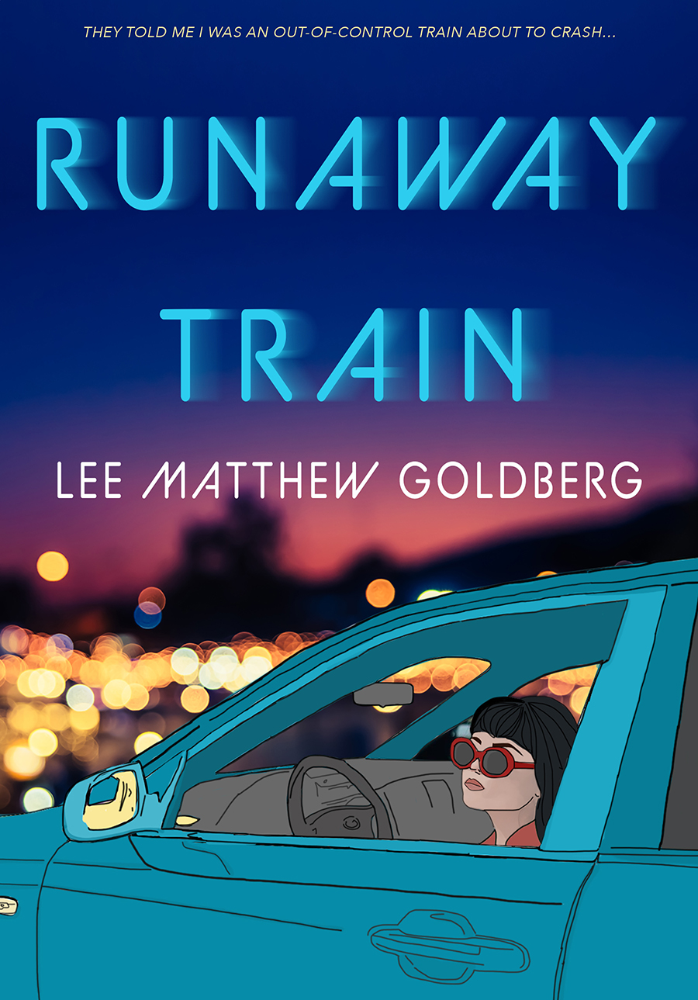
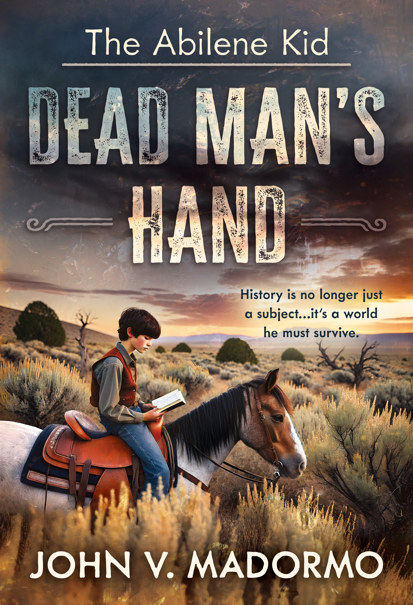

| View in browser |
 |
This Week's Adventure DealsFast-moving adventures for readers who want wonder, danger, and one-more-chapter energy. |
|

Runaway Trainby Lee Matthew Goldberg
After her sister's death, sixteen-year-old Nico takes a mixtape and flees Los Angeles for Seattle in the early 1990s. Grief, Kurt Cobain, and a darkly funny cross-country escape propel a raw coming-of-age journey toward the life she wants. $4.99 $0.99
Get It for $0.99 →
|
| |

The Abilene Kid: Dead Man's Handby John V. Madormo
A library book transports twelve-year-old Dominick to Abilene in 1888, where he becomes Pete Moss and apprentices to Sheriff Amos “Lone Wolf” Malone. To return home, he must rescue kidnapped children and change the lawman's doomed fate. $2.99 $0.99
Get It for $0.99 →
|
|
The Liars Beneathby Heather Van Fleet
Seventeen-year-old Becca is shattered by her best friend's death. When the girl's estranged brother returns to investigate, secret bucket lists, an unhinged ex, and small-town rumors draw them closer to a truth uglier than the lies left behind. $4.99 $0.99
Get It for $0.99 →
|
|
Wise Wolf Books 1707 E. Diana Street, Tampa, FL 33610 Website Unsubscribe |
|